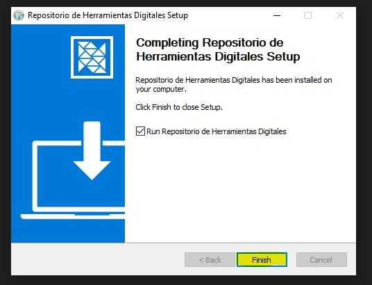
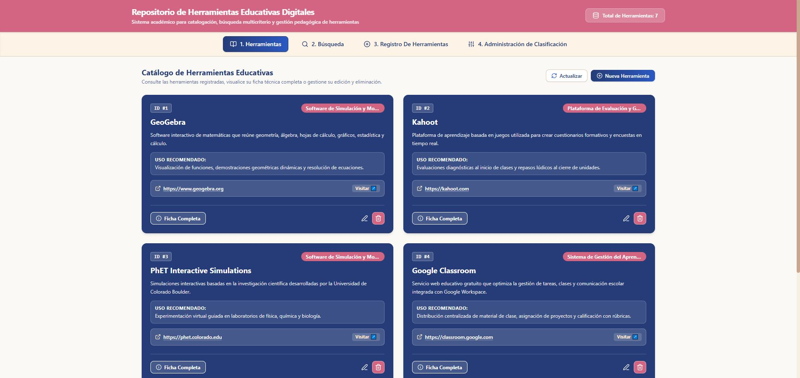

Abrir el instalador: Buscá el archivo Repositorio de Herramientas Digitales Setup en tu computadora y hacé doble clic.
Seleccioná "next".
Seleccioná "install" y espera a que cargue.
Seleccioná "finish".

¡Bienvenido al Repositorio de Herramientas Digitales!.

"
CONTEXTO E INFORMACIÓN
El proyecto
Acerca del proyecto
Nombre oficial: Repositorio de Herramientas Educativas Digitales.
Institución: Centro Educativo Departamental Miguela Rodríguez Araújo.
Docente Tutora: Daniela Ferreira
Descripción: Es una aplicación diseñada para facilitar el trabajo docente mediante la organización de herramientas y
recursos educativos digitales, clasificados por asignaturas y disponibles a través de enlaces. Su objetivo es apoyar la
planificación y enriquecer el desarrollo de las clases mediante el uso de recursos tecnológicos.
Problema y justificación
La dispersión de recursos digitales y las dificultades para aprovechar la tecnología limitan el tiempo y las
oportunidades de innovación de los docentes. El Repositorio de Herramientas Educativas Digitales propone una solución
centralizada, organizada por asignaturas y de fácil acceso, que simplifica la búsqueda de herramientas y facilita su
incorporación en el aula.Transforma la tecnología en una aliada cotidiana de la enseñanza, haciendo
que los recursos digitales sean más accesibles, prácticos y útiles para cada docente.
Objetivos y beneficiarios
EL objetivo general es transformar la gestión de recursos educativos digitales mediante una plataforma centralizada que optimice su
organización, acceso y aplicación en el aula.
Objetivos específicos
- Identificar las necesidades tecnológicas y pedagógicas de los docentes.
- Organizar herramientas digitales por asignaturas, categorías y niveles educativos.
- Centralizar los recursos en una estructura de datos organizada.
- Facilitar el acceso y la navegación mediante una página web intuitiva.
- Promover el aprovechamiento de la tecnología como aliada de la enseñanza.
Beneficiarios:
Docentes que buscan optimizar su tiempo, organizar sus recursos y
enriquecer sus clases mediante herramientas digitales.
Equipo y créditos
Sofía Carolina Gómez Lanik - Programación de aplicación
Jazmin Monserrath Yegros Diaz - Investigación de recursos digitales
Helena Duarte Espinola - Documentación
Avril Luana Ozorio Espinola - Desarrollo inicial de la interfaz web.
Dafne Melissa Godoy Lezcano - Coordinación
Esperanza Azucena Báez Gómez - Diseño, desarrollo y optimización de la interfaz web
INSTRUCCIONES PRÁCTICAS
Guías y manuales
Guía de usuario
Conocé las funciones principales del Repositorio de
Herramientas Educativas Digitales y cómo utilizarlas.
01. Herramientas
Esta sección muestra el catálogo de herramientas educativas
registradas. Cada recurso presenta su nombre, descripción,
uso recomendado, enlace e información de clasificación.
Total de herramientas: indica la cantidad de recursos registrados.
Actualizar: permite actualizar la vista del catálogo.
Nueva herramienta: abre el formulario para registrar un recurso.
Ficha completa: permite consultar información ampliada de la herramienta.
Visitar: abre el enlace externo del recurso educativo.
Editar: permite modificar los datos de una herramienta.
Eliminar: permite quitar una herramienta del registro.
02. Búsqueda
Permite localizar herramientas mediante distintos criterios.
Podés combinar varios campos para obtener resultados más
relacionados con tus necesidades.
Nombre: permite escribir el nombre de la herramienta.
Asignatura: selecciona la materia relacionada con el recurso.
Categoría pedagógica: permite elegir una categoría educativa.
Nivel educativo: especifica el nivel al que se orienta la herramienta.
Tipo de herramienta: permite seleccionar el tipo de recurso.
Búsqueda: ejecuta la consulta con los criterios seleccionados.
Limpiar filtros: restablece los campos de búsqueda.
Los resultados coincidentes muestran las herramientas que
corresponden a los criterios ingresados.
03. Registro de herramientas
Esta sección permite registrar nuevas herramientas y relacionarlas
con las clasificaciones correspondientes.
Creación de herramienta:
Nombre de la herramienta: identifica el recurso.
Tipo de herramienta: permite seleccionar su tipo.
Enlace oficial: contiene la dirección web del recurso.
Descripción pedagógica: explica su propósito educativo.
Uso recomendado en el aula: indica cómo puede utilizarse en clase.
Características técnicas y funcionales: describe sus principales características.
Guardar herramienta: registra la información ingresada.
Cancelar: permite cancelar la operación.
Gestión de conexiones:
Permite asociar o desasociar herramientas con asignaturas,
categorías y niveles educativos. El campo de búsqueda ayuda
a localizar la herramienta que se desea relacionar.
04. Administración de clasificación
Esta sección permite administrar los elementos que se utilizan
para organizar las herramientas educativas.
Clasificación destino: selecciona el tipo de elemento que se desea registrar.
Nombre: identifica la nueva clasificación.
Descripción: explica su finalidad o contenido.
Registrar en la clasificación: guarda el nuevo elemento.
Eliminar: permite quitar elementos de las listas de clasificación.
Las listas permiten visualizar los tipos de herramientas y las
asignaturas registradas. Esta organización ayuda a mantener
clasificado el catálogo.
Manual de Programación
En esta sección se describe la arquitectura, las tecnologías,
el funcionamiento y el desarrollo del Repositorio de
Herramientas Educativas Digitales.
01. Arquitectura general
El Repositorio de Herramientas Educativas Digitales
es una aplicación desarrollada para facilitar a los
docentes el acceso y la organización de recursos
tecnológicos educativos. Permite consultar herramientas
mediante enlaces y clasificarlas según asignaturas,
categorías pedagógicas y niveles educativos.
El proyecto se complementa con un sitio web informativo
que proporciona instrucciones de instalación, guías
de uso y orientación para resolver dificultades.
02. Tecnologías utilizadas
Java: implementación de la lógica
y las funcionalidades de la aplicación.
SQLite: almacenamiento local de
la información de las herramientas educativas.
HTML: estructura del sitio web
complementario.
CSS: diseño visual y presentación
de los contenidos del sitio.
Visual Studio Code: edición y
organización de los archivos del proyecto.
También se utilizaron herramientas de inteligencia
artificial como apoyo durante el desarrollo.
03. Diseño y arquitectura
La aplicación presenta una interfaz orientada a
facilitar la consulta y administración de los
recursos educativos. Permite acceder al catálogo
de herramientas, realizar búsquedas y registrar
nuevos recursos.
La organización de la información contempla la
relación entre las herramientas y sus criterios
de clasificación, facilitando una consulta
estructurada.
04. Modelo de datos
La base de datos SQLite almacena la información
necesaria para gestionar las herramientas educativas.
El modelo documentado contempla las siguientes
entidades principales:
Herramientas educativas:
nombre, descripción, enlace y tipo de recurso.
Asignaturas:
identificación y descripción de las materias.
Categorías:
clasificación pedagógica de los recursos.
Niveles educativos:
niveles para los que se recomiendan las herramientas.
Estas entidades permiten organizar los recursos
y relacionarlos con sus criterios de clasificación.
05. Funcionalidades principales
La aplicación incluye las siguientes funcionalidades:
Consultar las herramientas educativas disponibles.
Buscar recursos por nombre y aplicar filtros.
Acceder a los enlaces de las herramientas.
Registrar nuevas herramientas mediante un formulario.
Administrar los criterios de clasificación.
Consultar información descriptiva de los recursos.
Estas funciones permiten centralizar los enlaces
educativos y facilitar su utilización en la
planificación y el desarrollo de las clases.
06. Desarrollo del sitio web
El sitio web complementario fue desarrollado con
HTML y CSS para proporcionar información clara sobre
el proyecto y orientar a los usuarios en el uso
de la aplicación.
Su contenido se organiza en secciones informativas,
como instalación, guía de uso, solución de problemas,
preguntas frecuentes y soporte técnico.
El diseño contempla la organización de los contenidos
y su presentación visual para facilitar la navegación
y la comprensión de las instrucciones.
07. Pruebas y mantenimiento
La revisión del proyecto debe contemplar el funcionamiento
de las búsquedas, el registro de herramientas, la
administración de las clasificaciones y el acceso
a los enlaces.
En el sitio web, corresponde comprobar la navegación,
la presentación de los contenidos y la visualización
de las secciones. También es importante actualizar
la documentación cuando se modifiquen las
funcionalidades de la aplicación.
08. Limitaciones y mejoras futuras
La aplicación utiliza una base de datos local SQLite,
por lo que los cambios realizados en un equipo no se
sincronizan automáticamente con otros dispositivos.
Entre las posibles mejoras futuras se encuentran:
Actualizar periódicamente los recursos educativos.
Revisar los enlaces para detectar aquellos que
ya no funcionan.
Ampliar y mantener actualizada la documentación.
Optimizar la interfaz y la navegación.
Evaluar una alternativa de almacenamiento centralizado
si se necesita compartir información entre equipos.
Encontrá respuestas a las dudas más comunes sobre la
instalación, el funcionamiento y el uso del Repositorio
de Herramientas Educativas Digitales.
¿Qué es el Repositorio de Herramientas Educativas Digitales?
Es una aplicación que permite a los docentes consultar
y organizar herramientas digitales educativas mediante
enlaces, facilitando el acceso a recursos que pueden
complementar sus clases.
¿Cómo puedo instalar la aplicación?
Ejecutá el instalador llamado
Repositorio de Herramientas Digitales Setup
y seguí las instrucciones que aparecen en pantalla.
Para conocer el procedimiento completo, consultá la
sección Instalación.
¿Cómo puedo encontrar una herramienta educativa?
Ingresá a la sección de búsqueda y utilizá los filtros
disponibles: nombre, asignatura, categoría pedagógica,
nivel educativo o tipo de herramienta. Después,
seleccioná «Búsqueda» para consultar
los resultados.
¿Cómo puedo registrar una nueva herramienta?
Desde el catálogo, seleccioná
«Nueva herramienta». Completá el nombre,
el tipo de herramienta y la URL, que son los campos
obligatorios. También podés añadir una descripción
pedagógica, el uso recomendado en el aula y las
características técnicas y funcionales.
¿Por qué una herramienta no aparece en los filtros?
Verificá que la herramienta tenga asignadas las
conexiones correspondientes, como asignatura,
categoría pedagógica y nivel educativo. Si no cuenta
con estas relaciones, puede aparecer al buscarla por
su nombre, pero no en los filtros de clasificación.
¿Qué hago si un enlace no funciona?
Comprobá tu conexión a internet e intentá abrir el
enlace nuevamente. Si el problema continúa, es posible
que el sitio de destino esté temporalmente fuera de
servicio o que su dirección haya cambiado. Informá
del inconveniente al responsable del proyecto.
¿Qué hago si la aplicación no se abre?
Intentá iniciar la aplicación nuevamente desde el menú
de inicio de Windows. Si el problema persiste, reiniciá
el equipo y verificá que la instalación se haya
completado correctamente.
¿Qué hago si no encuentro el recurso que necesito?
Probá realizar una búsqueda con otros términos o
modificar los filtros. Si el recurso sigue sin
aparecer, podés comunicarte con el responsable
del proyecto para informar qué herramienta
educativa sería útil incorporar.
¿Las herramientas digitales reemplazan al docente?
No. Los recursos digitales son complementos del
proceso educativo. Su selección y utilización deben
responder a los objetivos de aprendizaje y al criterio
pedagógico del docente.
¿Cómo puedo informar un problema o hacer una consulta?
Accedé a la sección
Soporte técnico
para consultar los medios de contacto disponibles.
Al informar un inconveniente, incluí el nombre de
la herramienta y una breve descripción del problema.
¿No encontraste la respuesta que buscabas?
Consultá nuestra sección de soporte técnico para obtener
orientación sobre el uso de la aplicación.
Una mirada al trabajo realizado, los aprendizajes obtenidos
y las oportunidades de mejora del Repositorio de Herramientas
Educativas Digitales.
Una herramienta con propósito educativo
El desarrollo de este proyecto parte de la necesidad de
organizar y facilitar el acceso a herramientas digitales
que puedan apoyar el trabajo docente. A través de una
aplicación y un sitio web complementario, buscamos reunir
recursos e información en un espacio que facilite su
consulta y utilización.
01
Logros del proyecto
La creación del repositorio permite organizar
herramientas educativas mediante criterios de
clasificación y facilitar su búsqueda. De esta manera,
se propone una alternativa para centralizar recursos
que pueden complementar la planificación de las clases.
02
Aprendizajes del equipo
El proyecto permitió integrar conocimientos de
programación, bases de datos, diseño web y organización
de contenidos. También destacó la importancia de la
planificación, la comunicación y la colaboración durante
el proceso de desarrollo.
03
Desafíos y mejoras
Como toda herramienta digital, el repositorio puede
continuar evolucionando. La actualización de los
recursos, la revisión de los enlaces y la mejora de
la experiencia de usuario son aspectos importantes
para su mantenimiento futuro.
REFLEXIÓN DEL EQUIPO
La tecnología como apoyo al aprendizaje
Consideramos que este proyecto representa una oportunidad
para aplicar nuestros conocimientos en una propuesta
orientada a una necesidad educativa. Su desarrollo nos
permitió comprender que crear una herramienta digital
no consiste únicamente en programar, sino también en
organizar la información, pensar en los usuarios y
ofrecer una experiencia clara y funcional.
Este trabajo constituye una base para futuras mejoras
y demuestra el valor de trabajar en equipo para convertir
una idea en una propuesta concreta.


 "
"
 "
"